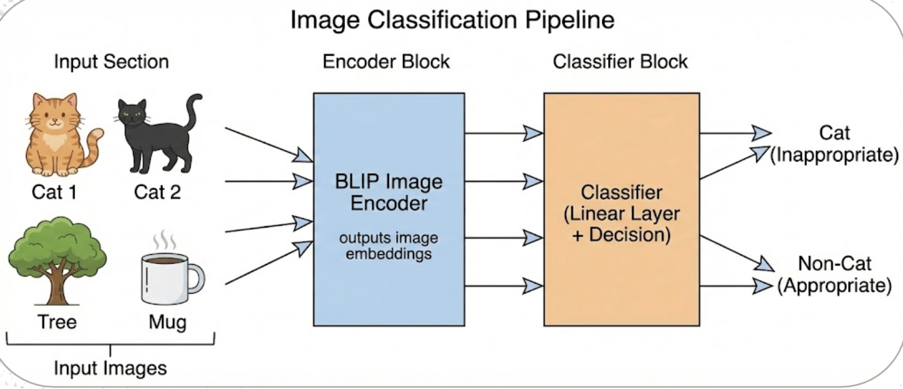
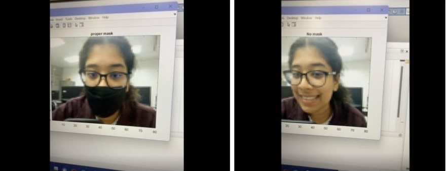

Diverse projects demonstrating expertise in AI/ML, software development, design, and business strategy
Deep learning-based image classification model using BLIP (Bootstrapped Language-Image Pre-training) with Hessian sharpness analysis for improved generalization on unseen data.

MATLAB App Designer application for real-time mask detection using image processing and machine learning classification algorithms with an intuitive user interface.

Comprehensive go-to-market strategy developed for a medical research project including detailed market analysis, customer segmentation, pricing strategy, and business model canvas.